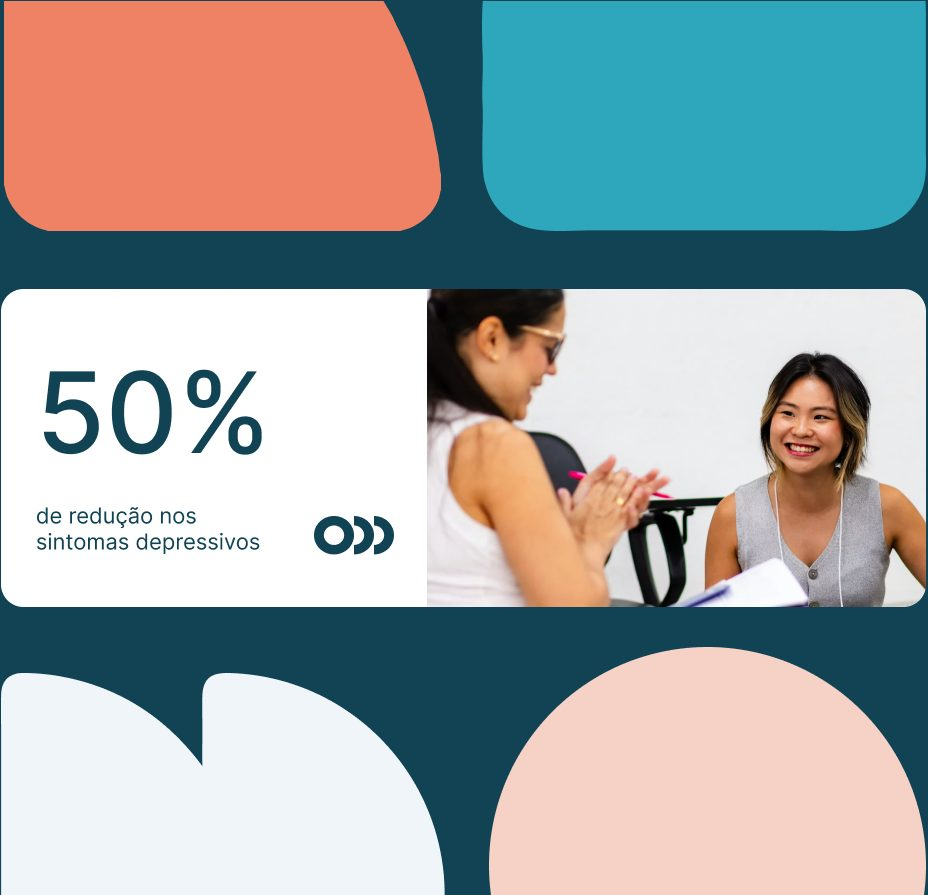
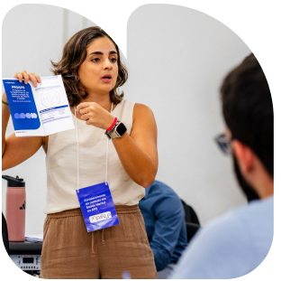
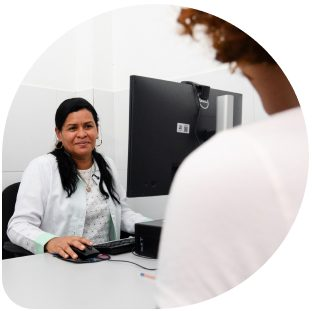
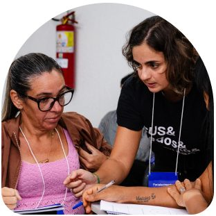

O cuidado em saúde mental também pode começar perto de casa.
Apoiamos municípios a qualificarem o cuidado em saúde mental nas unidades básicas de saúde, a porta de entrada do SUS.
Entre em contato
É preciso agir antes que
o sofrimento se agrave

Realizamos formações para fortalecer o cuidado em saúde mental nas unidades básicas de saúde

Apoiamos a implementação de acolhimentos para sofrimento emocional leve a moderado, com encaminhamento dos casos graves à atenção especializada

Oferecemos tutoria de especialistas e monitoramos a qualidade dos atendimentos
Me senti renovada com as palavras dela. Me deu força e me ajudou bastante!
Dona Zilda passou a vida na roça, no interior de Sergipe. Ao envelhecer, mudou-se para Aracaju para ficar perto dos filhos, mas perdeu a autonomia e o ritmo da vida no campo.
Assim, o sofrimento chegou em silêncio. Foi então que Larissa Brito, profissional qualificada pelo programa de Saúde Mental na Atenção Primária, a convidou para participar dos acolhimentos.
O grande impacto dessa parceria é a humanização do cuidado.
Para Débora Leite, Secretária de Saúde de Aracaju, a procura por saúde mental no município é crescente e exige resposta dentro da Atenção Primária. Parceira da ImpulsoGov desde 2019, as equipes de Aracaju participam das qualificações para identificar e acolher casos leves a moderados de sofrimento emocional.
Faça parte
do impulso.
Cada um
do seu jeito.
Se você é gestor de saúde, leve nossas soluções para o seu município. Se você quer investir em um SUS mais forte, se torne nosso parceiro. Entre em contato e comece a fazer parte.